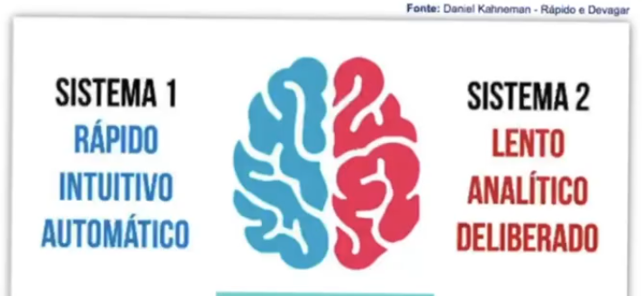
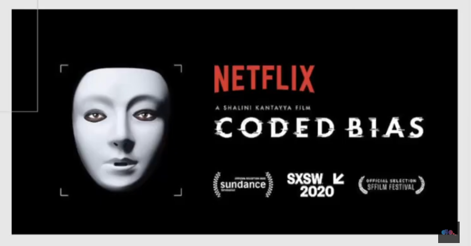

Introdução
A jornada do autoconhecimento é um processo essencial para qualquer profissional, especialmente para aqueles que assumem posições de liderança. Como líder do grupo no Projeto Integrador III, atualmente na fase final, tenho experimentado desafios e aprendizados que reforçam a importância do autoconhecimento no desenvolvimento profissional e pessoal.
A Importância da Liderança no Crescimento Pessoal
A liderança não é apenas sobre orientar e tomar decisões, mas também sobre reconhecer forças e limitações, tanto as minhas quanto as da equipe. Liderar um grupo exige empatia, escuta ativa e a capacidade de adaptar-se a diferentes situações. Neste projeto, aprendi a gerenciar conflitos, delegar tarefas de forma eficaz e incentivar o potencial de cada integrante, promovendo um ambiente colaborativo e produtivo.
O nosso célebro no sistema 2: tende à ficar lento, analítico e deliberado quando aparece novos desafios, porém temos que ser persistentes e nunca desistir dos nossos sonhos.
Code Bias: Um Exemplo de Superação e Inovação
O documentário Code Bias ilustra um grande desafio enfrentado por Joy Buolamwini, uma pesquisadora do MIT, ao perceber como os algoritmos de reconhecimento facial possuíam vieses raciais e de gênero. Sua jornada para expor essas falhas e promover mudanças na inteligência artificial demonstra a importância de questionar e desafiar padrões estabelecidos. Assim como Joy, que enfrentou dificuldades para fazer sua voz ser ouvida, líderes também precisam ter coragem para inovar e lutar por melhorias dentro de suas áreas de atuação.

💻 Reflexão para Desenvolvedores
Para desenvolvedores iniciantes e veteranos, o autoconhecimento é um diferencial que impulsiona a evolução na carreira. Entender suas habilidades, reconhecer pontos de melhoria e buscar aperfeiçoamento constante são aspectos fundamentais. Além disso, a liderança, mesmo quando não exercida formalmente, pode ser desenvolvida por meio da iniciativa, da capacidade de resolver problemas e da colaboração com a equipe Dev
Sobre Autoconhecimento:
- Conhecer os seus pontos fortes e fracos
- O que te move ou te impulsiona?
- Qual é a sua atribuição na comunidade ou na sociedade?...
Conclusão
Minha experiência como líder no Projeto Integrador III tem sido uma jornada de aprendizado e crescimento. O autoconhecimento e a liderança se mostram fundamentais para impulsionar não apenas minha carreira, mas também meu desenvolvimento pessoal. Assim como visto em Code Bias, é essencial ter a coragem de enfrentar desafios e buscar mudanças positivas, tanto no mundo da tecnologia quanto na nossa própria jornada profissional.